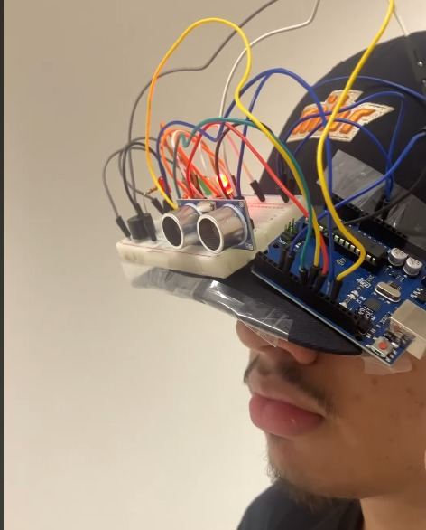

Atividade do boné

A atividade do boné consistiu em um projeto prático utilizando componentes eletrônicos, como sensores e LEDs, para criar um boné interativo. Ele pode ser usado para sinalização, medição de dados ou até mesmo como um acessório estético. Essa tarefa foi especialmente marcante porque exigiu criatividade, pensamento crítico e habilidades práticas para desenvolver um produto funcional e inovador.